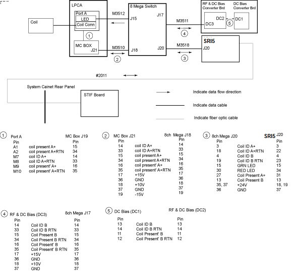
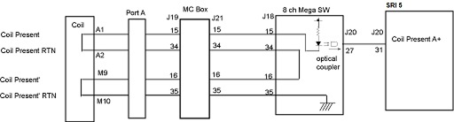
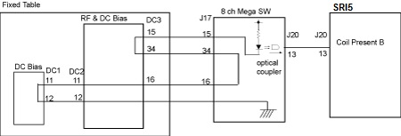

- 00000018WIA30044F20GYZ
- id_131059921.2
- Jul 5, 2019 10:25:10 PM
Coil ID Theory
Coil ID allows coils equipped with a Coil ID chip to be identified by the MR system. This chip is located in the coil quick-disconnect connector. All coils that interconnect with the quick-disconnect connector in the Low Profile Carriage must be Coil ID compatible. The system will not permit the customer to scan with coils that interconnect with this connector but are not equipped with the Coil ID chip.

Port A+
Coil ID and Coil Present pins exist in Port A+ in the Low Profile Carriage Assembly (LPCA). The SRI5 detects a coil connection through the SRI5 J20 to Mega J20 link from the 8ch Mega Switch by sensing a change in Port A+ Coil Present signal. The 8ch Mega Switch, in turn, checks the Port A+ for this Coil ID data. See the pin out information for the various connectors on the downside of the drawing. The 8ch Mega Switch makes this check through the Mega J18 to MC Box J21 link. The SRI5 receives information from the Host through the Run 2011 fiber optic links that is used to determine if the supplied Coil ID code matches that of any of the known coils. If a match is made then the SRI5 will command the LED in the LPCA to turn green through the SRI5 J20 to Mega J20 and Mega J15 to Port A+ LED links. Clinical scanning will then be permitted as long as the Coil ID code of the attached coil matches that of a known coil and the Coil ID code of the attached coil matches that of the coil selected in the prescription. If the Coil ID code returned to the SRI5 cannot be matched to a known coil or no Coil ID code is returned then the SRI5 commands the LED in the LPCA to turn red through the SRI5 J20 to Mega J20 and Mega J15 to Port A+ LED links.
As described earlier the Coil ID LED is always in 1 of 3 visual display states: green, red, and OFF. The Coil ID LED unit consists of a green and red LEDs. In summary, when the Coil ID LED is green then the MR System is indicating that a coil has been attached to quick-disconnect connectors in the LPCA, the Coil ID code from the attached coil matches a known coil and, as a result, clinical scanning will be permitted. When the Coil ID LED is red then the MR System is indicating that a coil has been attached to quick-disconnect connectors in the LPCA but either the Coil ID code hasn’t yet been detected or the Coil ID code has been detected but the system can’t match it to a known coil. When the Coil ID LED is red, clinical scanning will not be permitted. When the Coil ID LED is dark then this indicates that the MR System has not detected that a coil is connected.
| Green | Red | |
| Not Connected | OFF | OFF |
| Wrong ID | OFF | ON |
| Correct ID | ON | OFF |

Express Coil Posterior Array (only for Fixed Table)
Coil ID and Coil Present pins exist in the Fixed Table connecting to the Express Coil Posterior Array. The SRI5 detects a coil connection through the SRI5 J20 to Mega J20 link from the 8ch Mega Switch by sensing Port B Coil Present signal.
Note : From system point of view, Express Coil Posterior Array is identified as a coil connected to Port B.
The 8ch Mega Switch, in turn, checks the Fixed Table for this Coil ID data. See the pin out information for the various connectors on the downside of Figure 1. The 8ch Mega Switch makes this check through the Mega J17 to DC3 link. The SRI5 receives information from the Host through the Run 2011 fiber optic links that is used to determine if the supplied Coil ID code matches the Express Coil Posterior Array. Clinical scanning will then be permitted as long as the Coil ID code matches the Express Coil Posterior Array. If the Coil ID code returned to the SRI5 cannot be matched to a Express Coil Posterior Array or no Coil ID code is returned, then clinal scanning will not be permitted.
No LED for Express Coil.

Diagnostics for troubleshooting Coil ID problems are available under the SRI Functional Diagnostics on the MR system. Proprietary Help information for troubleshooting Coil ID problems is also provided under the Coil ID diagnostics on the MR system.